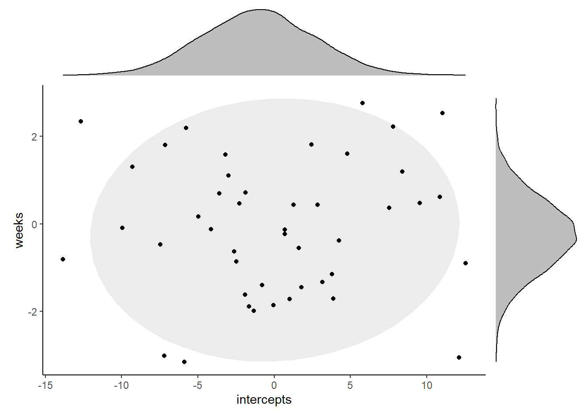
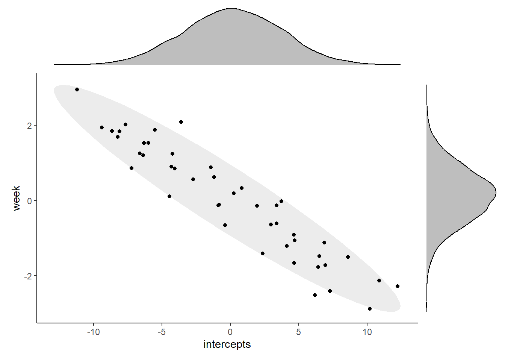
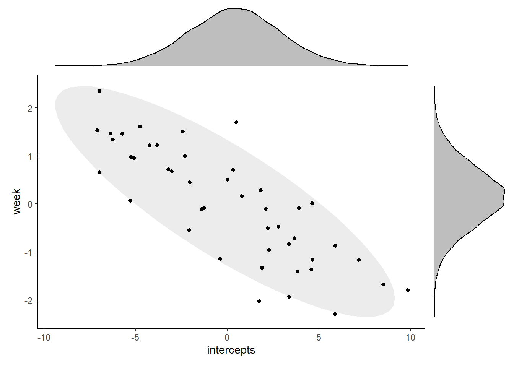

planking <- read_csv("data/planking.csv")
lme_plank <- lmer(plank_time ~ week + (1 + week|subject), data = planking)11 Correlations between random effects
Something that wasn’t discussed explicitly in the main body of the course materials is the idea of correlations between random effects, i.e., variance-covariance matrices in mixed models.
Here, we’ll unpack that a little, with a little more focus on theory and notation than we’ve had in previous sections of the course.
Inspiration for the explanation below was drawn from this excellent blog post by June Choe.
11.1 Distribution of random effects
A key assumption of mixed effects models, which we’ve already discussed in previous parts of the course, is that the set of random coefficients that we estimate for a random effect should follow a normal distribution.
Let’s go into a little more detail on why this is the case, using a dataset called planking.
We want to know whether the number of weeks spent training predicts how long people can hold a plank position for, while controlling for individual differences between our participants.
We’ve fitted random intercepts and slopes for each subject, which we expect to each follow a normal distribution. In biological terms, this means:
- We’re allowing for people to have a different starting ability on the plank exercise. We expect most people to start somewhere around an average baseline time, with a small number of people being naturally very good at baseline, and a small number being quite bad.
- We’re allowing for people to progress at different rates as they continue to train across the weeks. We expect most people to improve at or near some average rate, with a small number of people improving very quickly, and a small number maybe not improving much at all.
Both of these sound very reasonable and biologically plausible, right?
Let’s think about what this means in terms of distributions.
What we’ve just described is two sets of numbers, or random coefficients, each drawn from an independent normal distribution. Since we’re actually estimating the deviation from the mean when we estimate our random coefficients, the mean of the distribution is 0, with some standard deviation to tell us the spread.
We can extract these standard deviations from the model summary:
summary(lme_plank)Linear mixed model fit by REML. t-tests use Satterthwaite's method [
lmerModLmerTest]
Formula: plank_time ~ week + (1 + week | subject)
Data: planking
REML criterion at convergence: 2897.9
Scaled residuals:
Min 1Q Median 3Q Max
-2.70165 -0.65172 0.00492 0.61902 2.81377
Random effects:
Groups Name Variance Std.Dev. Corr
subject (Intercept) 46.617 6.828
week 2.501 1.582 -0.93
Residual 25.910 5.090
Number of obs: 450, groups: subject, 45
Fixed effects:
Estimate Std. Error df t value Pr(>|t|)
(Intercept) 26.6583 1.1422 44.0000 23.34 <2e-16 ***
week 4.1393 0.2501 44.0001 16.55 <2e-16 ***
---
Signif. codes: 0 '***' 0.001 '**' 0.01 '*' 0.05 '.' 0.1 ' ' 1
Correlation of Fixed Effects:
(Intr)
week -0.915That’s roughly 6.83 for the intercepts, and 1.58 for the slopes.
Now, let’s go ahead and use the rnorm function to simulate what we would expect the distribution of random effects to look like based on our description above.
We’ll plot the intercepts and slopes against each other. Each point on the scatterplot represents a single subject, i.e., a single grouping of our clustering variable.

View code for this plot
library(patchwork)
set.seed(13)
intercepts <- rnorm(45, 0, 6.83)
weeks <- rnorm(45, 0, 1.58)
expected_ranefs <- data.frame(intercepts, weeks)
p1 <- ggplot(expected_ranefs, aes(x = intercepts, y = weeks)) +
theme_classic() +
stat_ellipse(geom = "polygon", level = 0.9, alpha = 0.3, fill="grey") +
geom_point()
set.seed(2)
intnorm <- rnorm(10000, 0, 6.83)
slopenorm <- rnorm(10000, 0, 1.58)
p2 <- ggplot(data.frame(intnorm), aes(intnorm)) +
geom_density(fill = "grey") +
theme_void()
p3 <- ggplot(data.frame(slopenorm), aes(slopenorm)) +
geom_density(fill = "grey") +
theme_void() + coord_flip()
design <- "
22222#
111113
111113
111113
111113
"
p1 + p2 + p3 + plot_layout(design = design)Okay, so that’s what simulated versions of the random coefficients would look like.
Let’s compare it to what we actually see in our fitted model. To do this, we’ll extract the actual random coefficients using the ranef function, and then plot them in the same way (each point corresponding to a different subject/cluster).

This looks very different to the first plot. So what’s going on?
Well, in reality, the two sets of random effects do not actually have completely independent distributions. Instead, the two sets of coefficients are actually correlated.
This makes sense when we think in biological terms. We would expect there to be some relationship between individual subjects’ deviations from the mean baseline ability, and the mean improvement rate.
Specifically, it’s believable that people who start out much worse at the plank are able to improve faster/at a steeper rate, since they’ve got greater room for improvement. So, we see a negative correlation between the baseline, or intercept, and the improvement rate, or the slope.
In order to properly describe our set of random intercepts and slopes, then, we need more than just the two standard deviations; we also need to know the correlation between them.
And this is what happens automatically whenever you run a model such as lme_plank in lme4. Wherever you have multiple random effects for a single clustering variable, the correlation between them will automatically be estimated as well.
11.2 The variance-covariance matrix
If you have an interest in model notation, you might have looked some of the optional info that was provided earlier in the course on the topic.
If you did, you probably spotted notation that looked like this:
\[ \left( \begin{array}{c} U_{0j} \\ U_{1j} \end{array} \right) ∼ N \left( \begin{array}{c} 0 \\ 0 \end{array} , \begin{array}{cc} \tau^2_{00} & \rho_{01} \\ \rho_{01} & \tau^2_{10} \end{array} \right) \]
This is a variance-covariance matrix. It contains the standard deviations of each of the two random effects, \(\tau^2_{00}\) and \(\tau^2_{10}\), plus the correlation between them, \(\rho_{01}\), which gets written out twice just because of the mirrored layout.
The values that populate the variance-covariance matrix are reported in the model summary in lme4.
summary(lme_plank)Linear mixed model fit by REML. t-tests use Satterthwaite's method [
lmerModLmerTest]
Formula: plank_time ~ week + (1 + week | subject)
Data: planking
REML criterion at convergence: 2897.9
Scaled residuals:
Min 1Q Median 3Q Max
-2.70165 -0.65172 0.00492 0.61902 2.81377
Random effects:
Groups Name Variance Std.Dev. Corr
subject (Intercept) 46.617 6.828
week 2.501 1.582 -0.93
Residual 25.910 5.090
Number of obs: 450, groups: subject, 45
Fixed effects:
Estimate Std. Error df t value Pr(>|t|)
(Intercept) 26.6583 1.1422 44.0000 23.34 <2e-16 ***
week 4.1393 0.2501 44.0001 16.55 <2e-16 ***
---
Signif. codes: 0 '***' 0.001 '**' 0.01 '*' 0.05 '.' 0.1 ' ' 1
Correlation of Fixed Effects:
(Intr)
week -0.915The right hand column for the random effects, Corr, specifies the strength of the correlation (i.e., \(\rho_{01}\)). Here, we can see that there is indeed a negative correlation between the slopes and intercepts for our set of subjects - a strong one.
If we had more than two random effects for a single clustering variable, our variance-covariance matrix can grow quite quickly. With three random effects, we estimate three correlations; with four random effects, that’s six correlations.
This is part of the reason why random effects can be so “power-hungry”, and why we can so quickly run into issues when estimating complicated models. We’re estimating a lot of things!
11.3 Assuming independent distributions
Given this issue of power, we might not always want to spend resources estimating those correlations. Or, we might have a scientific reason to think that two sets of random coefficients really won’t be correlated at all.
If so, there is syntax in lme4 that allows us to explicitly not estimate the correlations: the || double-bar syntax.
lme_plank_nocorr <- lmer(plank_time ~ week + (1 + week||subject),
data = planking)Warning in checkConv(attr(opt, "derivs"), opt$par, ctrl = control$checkConv, :
Model failed to converge with max|grad| = 0.00223772 (tol = 0.002, component 1)summary(lme_plank_nocorr)Linear mixed model fit by REML. t-tests use Satterthwaite's method [
lmerModLmerTest]
Formula: plank_time ~ week + (1 + week || subject)
Data: planking
REML criterion at convergence: 2963.7
Scaled residuals:
Min 1Q Median 3Q Max
-2.39255 -0.67169 -0.00851 0.63670 2.54023
Random effects:
Groups Name Variance Std.Dev.
subject (Intercept) 28.262 5.316
subject.1 week 1.636 1.279
Residual 27.351 5.230
Number of obs: 450, groups: subject, 45
Fixed effects:
Estimate Std. Error df t value Pr(>|t|)
(Intercept) 26.6583 0.9548 39.7472 27.92 <2e-16 ***
week 4.1393 0.2091 39.7472 19.80 <2e-16 ***
---
Signif. codes: 0 '***' 0.001 '**' 0.01 '*' 0.05 '.' 0.1 ' ' 1
Correlation of Fixed Effects:
(Intr)
week -0.203
optimizer (nloptwrap) convergence code: 0 (OK)
Model failed to converge with max|grad| = 0.00223772 (tol = 0.002, component 1)Notice that the Corr column has now disappeared from the summary.
Though the coefficients for the fixed effects are identical, our model has also changed a bit in the random effects, with slightly different - though broadly similar - standard deviations.
If you use the ranef function to dig further, you will also see that there are different coefficients estimated for each subject in this model, compared to the one before.
Importantly, however, choosing not to estimate the correlation between the random effects doesn’t mean that it doesn’t exist. We can plot the intercepts and slopes from this new model against each other, and see that they do still appear to correlate (even if we don’t have a value to put on it).

11.4 Summary
Understanding variance-covariance matrices might be a step further than you really need, but you’re likely to come across them if you spend much time reading about mixed models.
It’s particularly relevant if you’re planning to simulate hierarchical data for one reason or another, if you’re trying to find ways to reduce the number of parameters you’re estimating to boost power, or if you have theoretical/scientific reasons to wonder about the relationships between different random effects.
Key Points
- Multiple random effects (on the same clustering variable) are drawn from a multivariate normal distribution, i.e., are not independent of one another
- As a result, they will be correlated with each other
- These correlations are estimated by
lme4as standard and organised into a variance-covariance matrix - We can choose not to estimate them in
lme4using the||double-bar syntax